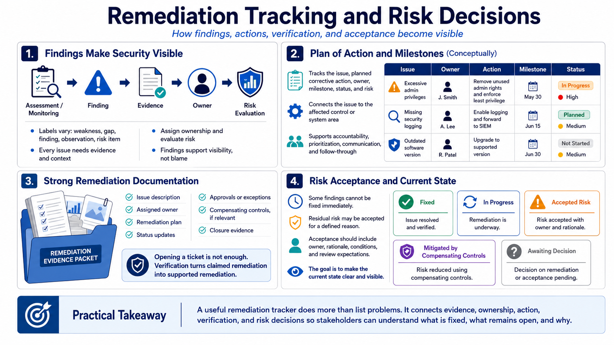

Findings, POA&Ms, and Remediation Documentation
Connecting to LMS... Progress: in progress

Narration
Assessment and monitoring often identify weaknesses, gaps, findings, observations, or risk items. The labels may vary by context, but the underlying need is similar: a documented issue should be tied to evidence, assigned to an owner, evaluated for risk, and tracked to resolution or an approved risk decision. Findings are not a sign that the program has failed. They are part of how security posture becomes visible.
A plan of action and milestones, conceptually, is a way to track weaknesses, planned corrective actions, ownership, milestones, status, and risk. It should connect the issue to the affected control or system area and show how the organization intends to address it. The value is not the existence of a tracker. The value is that the tracker supports accountability, prioritization, communication, and follow-through.
Remediation documentation should show both action and verification. Opening a ticket is not enough. A strong record identifies the issue, the owner, the remediation plan, status updates, approvals or exceptions, compensating controls if relevant, and closure evidence. Closure evidence should show that the issue was corrected or otherwise addressed, not merely renamed or moved. Verification matters because it turns claimed remediation into supported remediation.
Risk acceptance should be treated carefully. Sometimes a finding cannot be remediated immediately, or the organization decides to accept a residual risk for a defined reason. That decision should be documented at the right level with ownership, rationale, conditions, and review expectations. Remediation documentation is strongest when it makes the current state clear: fixed, in progress, accepted, mitigated through compensating controls, or awaiting a decision.